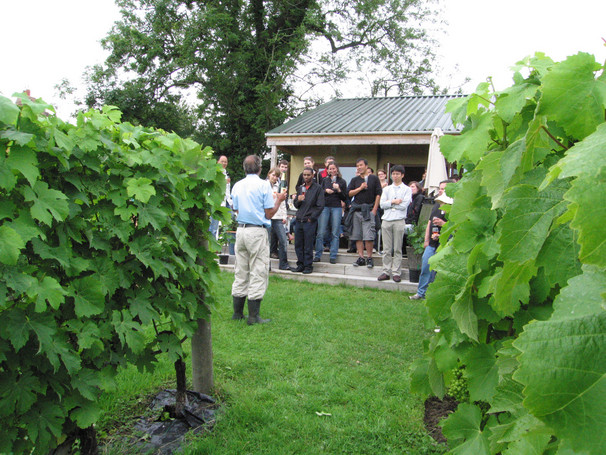
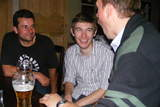
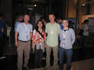
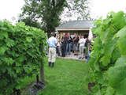
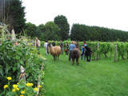
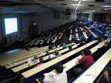

<!--#set var="title" value="$single_title"-->
<!--#include virtual="/inc/page-header.html"-->
<!--#include virtual="/inc/page-layout-top-wide.html"-->
  <center>
         <a href="30.html" onMouseOver="Bildwechsel(6,prev_on)" onMouseOut="Bildwechsel(6,prev)"> </a>&nbsp;&nbsp;&nbsp;
         <a href="index.html" onMouseOver="Bildwechsel(7,index_on)" onMouseOut="Bildwechsel(7,index)"> </a>&nbsp;&nbsp;&nbsp;
         <a href="32.html" onMouseOver="Bildwechsel(8,nextx_on)" onMouseOut="Bildwechsel(8,nextx)"> </a>
   <strong></strong><br>
 <br><br>
   </center>
<center>
         <table border=1><tr>                                                                                                         
         <td width=73 align=center><a href="29.html"></a></td>
         <td width=80 align=center><a href="30.html"></a></td>
         <td width=86 align=center></td>
         <td width=80 align=center><a href="32.html"></a></td>
         <td width=73 align=center><a href="33.html"></a></td>
         </tr></table>                                                                                                         
        
        
        
        
</center>
<center>
         <a href="30.html" onMouseOver="Bildwechsel(6,prev_on)" onMouseOut="Bildwechsel(6,prev)"> </a>&nbsp;&nbsp;&nbsp;
         <a href="index.html" onMouseOver="Bildwechsel(7,index_on)" onMouseOut="Bildwechsel(7,index)"> </a>&nbsp;&nbsp;&nbsp;
         <a href="32.html" onMouseOver="Bildwechsel(8,nextx_on)" onMouseOut="Bildwechsel(8,nextx)"> </a>
</center>
<center>
[ 31/91 ]
 </center>
<!--#include virtual="/inc/page-footer.html"--> 
   
